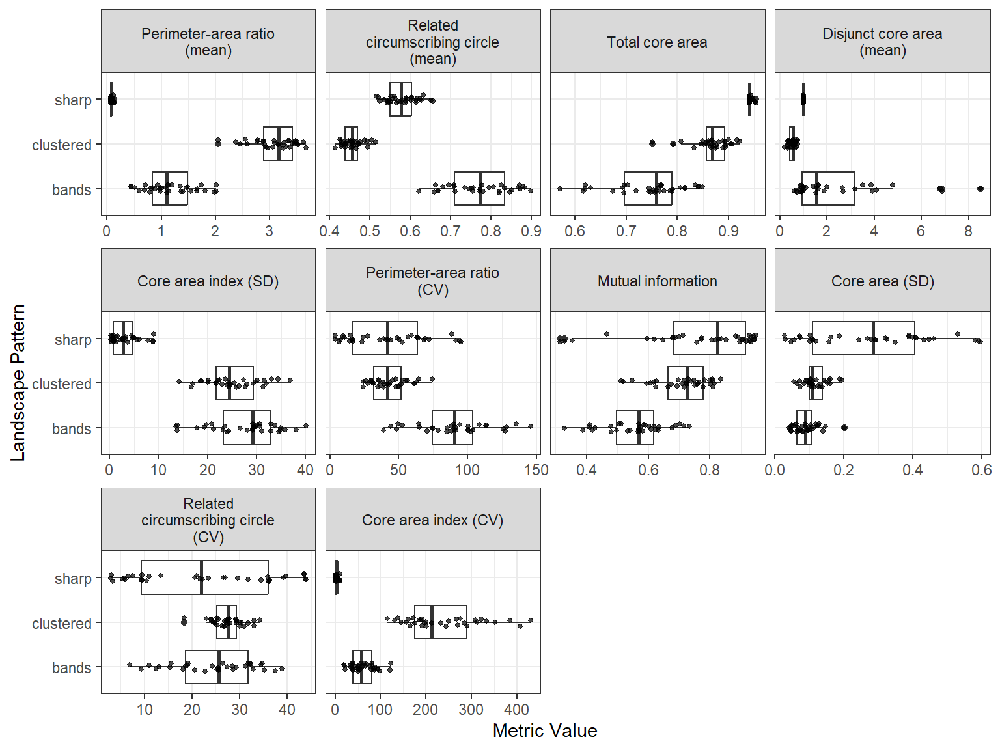
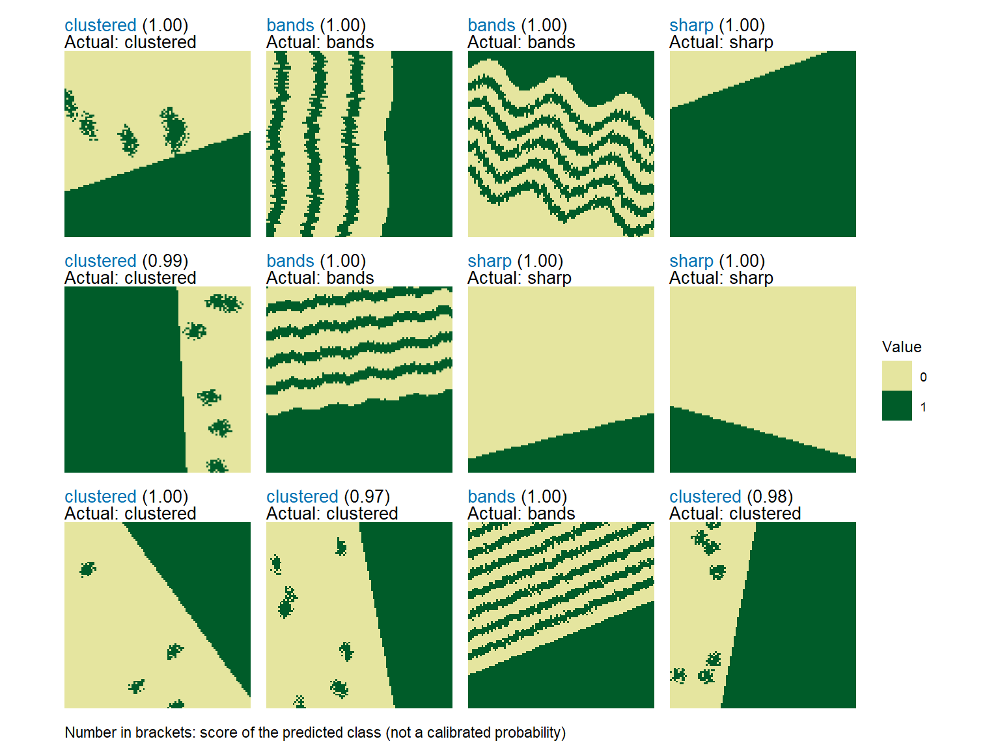

library(spatPatClassifyR)
# Set seed for reproducibility
set.seed(123456)This vignette provides an overview of the workflow to train a neural network on landscape metrics and then use the trained network to classify new landscapes based on the same metrics.
The workflow consists of the following steps:
- Generate training landscapes with known patterns using the
create_landscapes()function. - Calculate landscape metrics for the training landscapes using the
calculate_landscape_metrics()function. - Select most informative metrics (i.e. metrics that differ the most between landscapes) using the
evaluate_landscape_metrics()function. - Train a neural network using the selected metrics with the
train_nn_metrics()function. - Classify new landscapes using the trained neural network with the
apply_nn_metrics()function.
Step 1: Generate Training Landscapes
You can generate a set of training landscapes with known patterns. See landscape generation vignette for details on landscape generation and available patterns and options.
# Generate 100 training landscapes of 3 patterns
landscapes <- create_landscapes(
n = 100,
patterns = c("labyrinth", "random", "clustered")
)
#> ✔ Successfully generated all 100 training landscapesStep 2: Calculate Landscape Metrics
Next, you can calculate landscape metrics for the training landscapes. Landscape metrics are calculated using the metrics and functions from the landscapemetrics package. They can be calculated on the class level (i.e. for each land cover class separately) or on the landscape level (i.e. for the whole landscape). For details, see landscape metrics vignette.
In this example, we calculate metrics on the landscape level.
# Calculate landscape metrics on the landscape level
landscape_metrics <- calculate_landscape_metrics(
landscapes,
level = "landscape"
)Step 3: Evaluate Landscape Metrics
You can use the evaluate_landscape_metrics function to select the n (e.g. n=10) most informative metrics for classification based on different methods. Here, we use the p-values of a Kruskal-Wallis H test (for more details and other options see landscape metrics vignette).
Note
Note, that some metrics may return
NAfor some landscapes. Also, some metrics may have the same value for each landscape (zero variance between the values). By default, these metrics are removed before evaluation and the user gets warned about the metrics that are removed.It is not recommended to set
exclude_na = FALSE, as metrics withNAvalues cannot be used for training the neural network. They may however be informative and useful for other types of analyses.
best_10 <- evaluate_landscape_metrics(
metrics = landscape_metrics,
method = "kruskal_p",
metrics_number = 10,
verbose = FALSE
)
#> Warning: Excluded 600 rows containing 6 metrics with NA values. Metrics removed:
#> "enn_cv", "enn_mn", "enn_sd", "iji", "pafrac", and "rpr" Use
#> `exclude_NA_metrics = FALSE` to retain (not recommended for model training)
#> Warning: Excluded 1 metrics with zero variance: "pr"Alternatively, you can manually select the metrics you want to use for further evaluation. For this, just provide a list of the metric names you are interested in.
You can plot the differences between patterns for the selected metrics using the plot_metrics function.
# Plot selected metrics
plot_metrics(
metrics = landscape_metrics,
selected_metrics = best_10
)
Step 4: Train Neural Network
The model can now be trained using the selected metrics from step 3. Training can be done with or without cross-validation. Valid options for the cross-validation method cv_method are:
-
"none": no cross-validation -
"k-fold": k-fold cross-validation withcv_foldsnumber of folds -
"loo": leave-one-out cross-validation
For details and further options see the function help ?train_nn_metrics().
# Train neural network with k-fold cross-validation (3 folds)
model <- train_nn_metrics(
metrics = landscape_metrics,
metrics_selected = best_10,
cv_method = "k-fold",
cv_folds = 3,
verbose = FALSE
)To check the model performance, you can look at the confusion matrix from cross-validation:
# Confusion matrix from cross-validation
model$performance$confusion_matrix
#> Actual
#> Predicted clustered labyrinth random
#> clustered 29 3 0
#> labyrinth 4 31 0
#> random 0 0 33You can also check other performance metrics like overall accuracy:
# Overall accuracy
model$performance$accuracy
#> [1] 0.93Or per class metrics like precision, recall, and F1-score:
model$performance$per_class_metrics
#> # A tibble: 3 × 5
#> class count recall precision f1_score
#> <chr> <int> <dbl> <dbl> <dbl>
#> 1 clustered 33 0.88 0.91 0.89
#> 2 labyrinth 34 0.91 0.89 0.9
#> 3 random 33 1 1 1Step 5: Classify New Landscapes
Finally, you can create some new test landscapes and classify them using the trained model. In this example, we create 10 new landscapes for testing.
In reality these could be landscapes read in from files or created in other ways (e.g. outputs of simulation models). For details on importing own landscapes, see the importing landscapes vignette.
# Create 10 new test landscapes using the same patterns as for training
test_landscapes <- create_landscapes(
n = 10,
patterns = c("labyrinth", "random", "clustered")
)
#> ✔ Successfully generated all 10 training landscapesIf test landscapes have been created with create_landscapes(), their true patterns are known. Therefore they can be used to evaluate classification performance.
Note
To get additional performance metrics, set
return_performance = TRUEwhen applying the model. This only works if true patterns are known. If true patterns are not known, setreturn_performance = FALSE(default).
# Classify test landscapes using the trained model
classification <- apply_nn_metrics(
landscapes = test_landscapes,
nn_model = model,
return_performance = TRUE
)
#> Actual
#> Predicted clustered labyrinth random
#> clustered 3 0 0
#> labyrinth 0 4 0
#> random 0 0 3
#> # A tibble: 3 × 5
#> class count recall precision f1_score
#> <chr> <int> <dbl> <dbl> <dbl>
#> 1 clustered 3 1 1 1
#> 2 labyrinth 4 1 1 1
#> 3 random 3 1 1 1You can look at the predicted patterns for each test landscape individually and compare actual and predicted classes:
# Predicted patterns
classification$predictions
#> # A tibble: 10 × 8
#> landscape_id landscape_name actual_class predicted_class confidence clustered
#> <int> <chr> <chr> <chr> <dbl> <dbl>
#> 1 1 clustered_1_r… clustered clustered 1.00 1.00
#> 2 2 random_2 random random 1.00 0.00142
#> 3 3 clustered_3_r… clustered clustered 1.00 1.00
#> 4 4 random_4 random random 1.00 -0.00613
#> 5 5 labyrinth_5 labyrinth labyrinth 0.897 0.145
#> 6 6 random_6 random random 1.00 0.000149
#> 7 7 labyrinth_7 labyrinth labyrinth 0.889 0.0975
#> 8 8 clustered_8_r… clustered clustered 1.00 1.00
#> 9 9 labyrinth_9 labyrinth labyrinth 0.980 0.0232
#> 10 10 labyrinth_10 labyrinth labyrinth 0.769 0.190
#> # ℹ 2 more variables: labyrinth <dbl>, random <dbl>You can also look at performance summaries like confusion matrix:
# Performance summary
classification$performance$confusion_matrix
#> Actual
#> Predicted clustered labyrinth random
#> clustered 3 0 0
#> labyrinth 0 4 0
#> random 0 0 3And other metrics like accuracy, precision, recall, and F1-score:
# Other performance metrics
classification$performance$per_class_metrics
#> # A tibble: 3 × 5
#> class count recall precision f1_score
#> <chr> <int> <dbl> <dbl> <dbl>
#> 1 clustered 3 1 1 1
#> 2 labyrinth 4 1 1 1
#> 3 random 3 1 1 1To visualize the classified landscapes along with their true and predicted patterns use the function plot_classified_landscapes. Correctly classified landscapes are shown in green, misclassified ones in red. To plot only misclassified landscapes, set only_misclassified = TRUE.
Note
If you classified landscapes where the true patterns are not known, the plot will show the landscape and the predicted pattern only.
# Visualize true and predicted patterns
plot_classified_landscapes(
classification = classification$predictions,
landscapes = test_landscapes
)